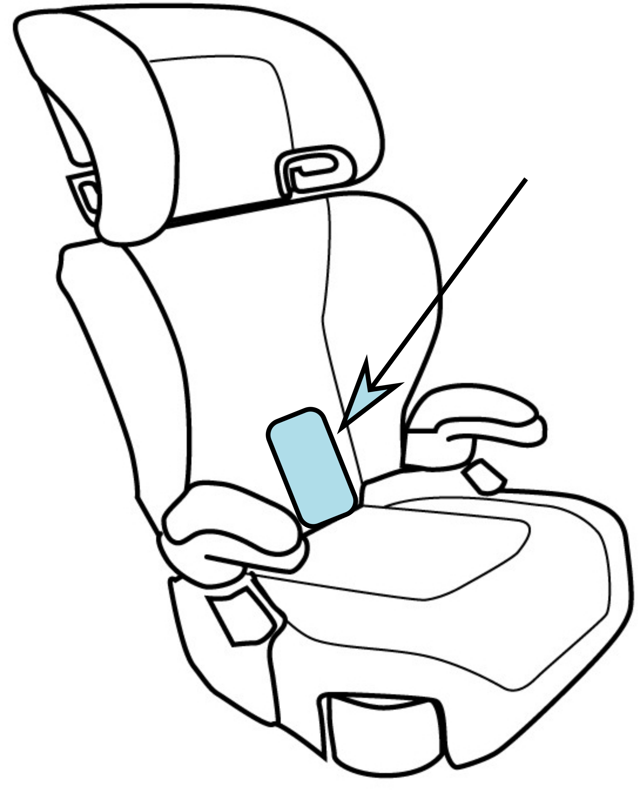

Welcome to the Child Car Seat Angle Tester App
What's the child's age?
0-1 years old
1-2 years old
2-3 years old
3-4 years old
4+ years old
Place and hold your phone on the car seat as displayed below

Next
Rock the car seat back and forth